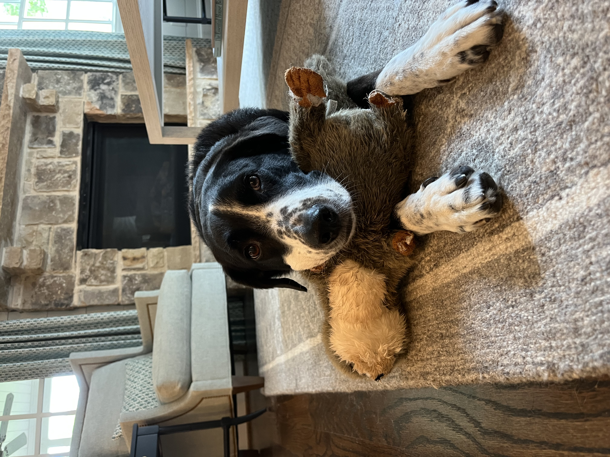
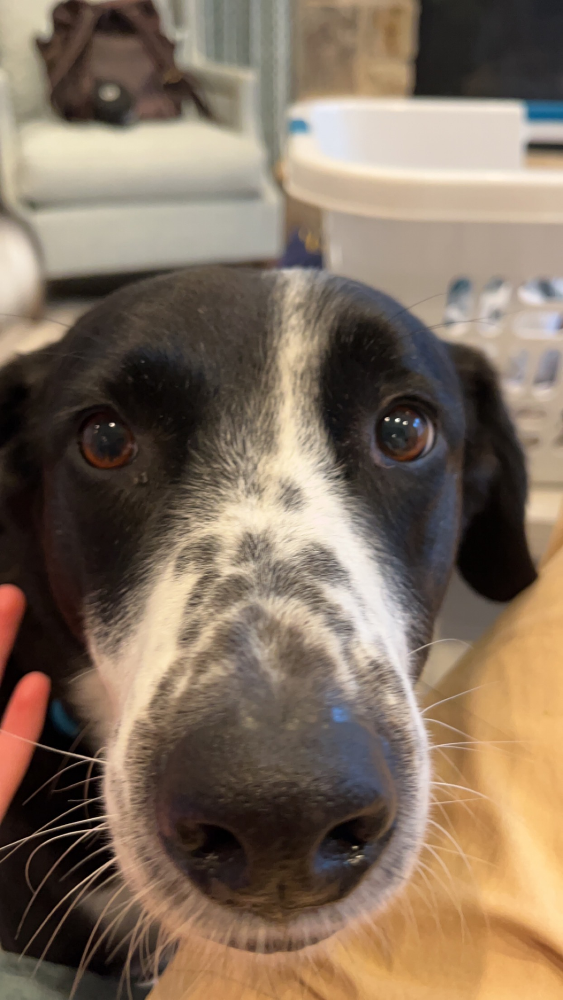
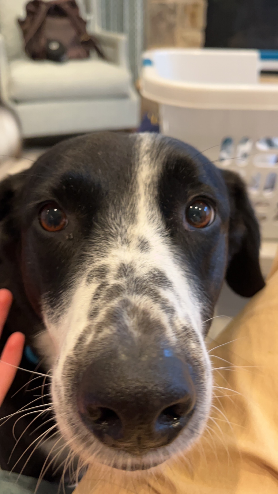

Nickels

Nickels was adopted from Ohio in 2010. He turned 13 years old in June 2023, which he celebrated with a Taylor Swift themed birthday party. Nickels often travels with his family; he has been to over ten states. He has lived in Illinois and California. Nickels is a very unique dog- he is allergic to meat. His favorite word is “present.” His one true joy is receiving and opening gifts with his family.
In 2020, Nickels’ brought home a new dog: Socks. Socks is potentially the villain in Nickels’ life. He destroys Nickels’ favorite toys and is highly allergic to peanut butter, which means Nickels now rarely gets his favorite treat! However, when you find them sharing a dog bed, you wonder if the sibling rivalry is all a facade.
Photo Gallery


Likes
- Plush toys
- Wrapping paper
- Dog parks
- Maddie House
Pappy

Pappy is a 7 year old morkie. Most days he prefers to spend it laying around the house in his various favorite spots. Most of the time you can find him lying in his bed. He loves going with walks, but still hasn’t figured out how to approach other dogs without scaring them off. He loves his family and loves to keep intruders away even for his size.
He also enjoys playing with his favorite basketball. He loves pushing it around, scratching it, or even talking with it. He also loves his little stuffed animal too. Pappy also loves to be scratched and will ask you to keep scratching until he is happy.
Photo Gallery


Likes
- Taking naps with his paws in the air
- Getting scratches or belly rubs
- Any kind of dog treats
- Brian Cereceres
Bacon Q Dog

Bacon Q. Dog is a 9yr old labradoodle. He prefers to spend his days lounging among the three different beds/couches that his family has gifted him. He enjoys a walk or two around the neighborhood, as long as he can pretend that he doesn't see any of the other animals to avoid the embarrassment of not wanting to admit he has no wolf-like skills in chasing them.
At night just as the rest of the family is ready to relax, Bacon suddenly wants to release all of his energy. He will place his toys on a mini couch and frantically drag the couch around, giving his toys "a ride." There is also a lot of rolling. Lots and lots of rolling.
Photo Gallery


Likes
- Belly rubs
- Playing tug-of-war
- Sneaking onto the couch
Cooper Dog
Cooper is an 8yr old border collie and lab mix. We rescued him from the Humane Society as a puppy! He loves going on long walks/runs, but he stops to sniff something every few steps. He’s pretty friendly, but he loves to loudly bark at delivery people who ring the doorbell.
Whenever it’s movie night, Cooper has to join on the couch/bed or he feels left out. He loves to cuddle and pats on his tummy. Cooper will play fetch for about 2 or 3 rounds, but he quickly gets bored. He leaves his toys all around the house for the rest of the family to find.
Photo Gallery
 



Likes
- Peanut butter
- Going on long walks
- Sleeping
- Chloe Emch
Hachi

Hachi is a 13 year old Akita. He’s a very old boy who likes to play in snow and run laps around our yard. He is super nice and never bites. He is timid but friendly and will always come and greet visitors with a smile and a few barks.
Hachi is a jealous dog. Although shy, he does not like it when other dogs steal attention from him and he will lightly bite them. When Hachi shared the house with another dog, a small poodle, he would constantly bicker with the poodle when it was being loud.
Photo Gallery


Likes
- Snow
- Being around people
- Eating human food
- Matthew Sun
Jiji

Jiji is a one year old gray tabby cat born in Miami, FL. She was adopted when she was a few weeks old. Her birthday is July 2nd 2022. Her favorite toy is her fish wand and her second favorite toy is a slinky.
In her free time she likes to sit on the windowsill and people watch. She also likes to collect any stray ponytails she can find in bathrooms, on the floor, and on bedside tables. She has a very high pitched meow and loves to be brushed.
Photo Gallery


Likes
- Slinkies
- Eating plants
- Hair ties
Basil

Basil, otherwise known as Slaysil, is a very energetic white, slightly crusty and trusty, dog (bichon) . She gets princess treatment in her household, but also out in public. As a consequence, she is very clingy and loves to lick, especially in the face.
She endeavors in multiple hobbies and activities, which include flying, licking, standing on two legs, ringing bells, and jumping through hula hoops.
Photo Gallery


Likes
- Empty water bottles
- Socks
- Cats
Cooky

Cooky is an 11 month old Bernedoodle. He likes to play, run around, go on walks, eat snacks and treats (not his own dog food), get pets and belly rubs, and cuddle. You can usually find him playing with his toys in the living room, chilling in the office room with my dad, or cooling off in the garage.
He’s still a baby, but he can get super hyper. Whenever someone rings the doorbell, Cooky gets really excited, barking and dashing towards the front door. He also jumps really high when he’s hyper and wags his tail like crazy. Overall, though, he likes to chill and cuddle just as much as he likes to play.
Photo Gallery


Likes
- Dog cookies
- Pets and belly rubs
- Running around the house